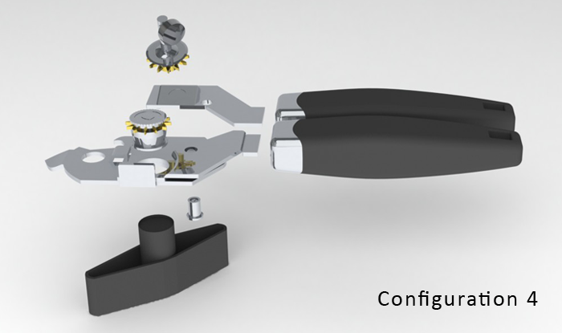

Type
School project
Role
3D Modelling
Texturing
Product Design
Software


Objective
Use SolidWorks to create an original item which I chose the can opener and to iterate various configurations by applying design tables, as well as potential ideas.
Process
Before using the software to model the can opener, sketches were first drawn to visualize the components found within the object, as well as understanding its proportional dimensions. Afterwards, the product was build in 3D space using SolidWorks to further learn about its mechanisms and how the can opener functions. Lastly, creativity was used to generate various configurations of extended usability for a can opener.
Result
With this project, I began to learn advanced functions in SolidWorks such as using design tables to produce product families of similar designs driven by the original configuration.

- 